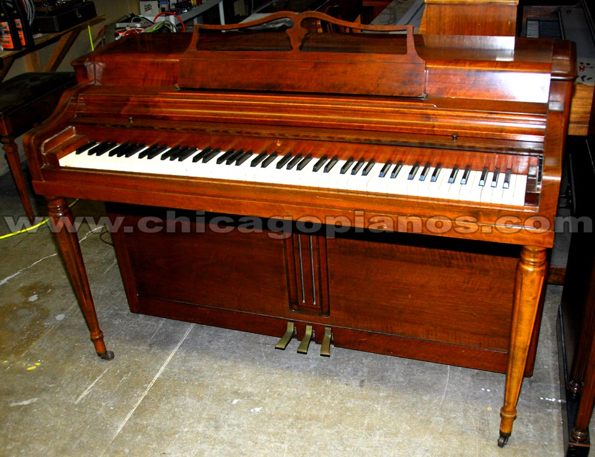

Scotish Gaelic music plays a big part in the GCSE world of music course, one particular song is covered in detail this sonng is called The Skye Waulking Song or (Chuir m'athair mise dhan taigh charraideach) in the Scottish Gaelic language. It includes a 12/8 time signature and is based around 3 common chords (C,Em and G). The song is included as a collection of Gaelic folk songs that were created by a man named Alexander Carmichael.
Capercaillie is a Gaelic musical style which combines both folk and rock instruments in order to produce a particular sound. The wurlitzer piano and bouzouki are two examples of instruments used to produce this sound, other instruments such as bass and pipes also ecxist which aid in the production of this kind of sound. The wurlitzer is popular in rock musical styles as it uses steel reeds and an electrostatic pickup system in order to produce the sound that it makes. Here is a picture of what a wurlitzer piano looks like:
